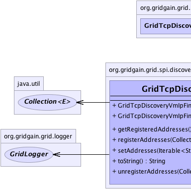
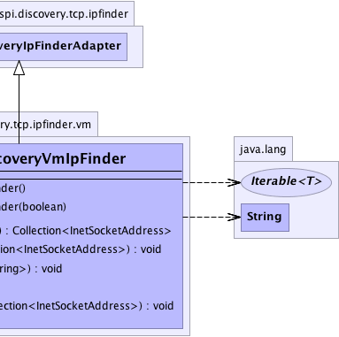

org.gridgain.grid.spi.discovery.tcp.ipfinder.GridTcpDiscoveryIpFinderAdapter
org.gridgain.grid.spi.discovery.tcp.ipfinder.vm.GridTcpDiscoveryVmIpFinder
org.gridgain.grid.spi.discovery.tcp.ipfinder.GridTcpDiscoveryIpFinderAdapter
org.gridgain.grid.spi.discovery.tcp.ipfinder.vm.GridTcpDiscoveryVmIpFinder
|
GridGain™ 3.6.0c
Community Edition |
|||||||||
| PREV CLASS NEXT CLASS | FRAMES NO FRAMES | |||||||||
| SUMMARY: NESTED | FIELD | CONSTR | METHOD | DETAIL: FIELD | CONSTR | METHOD | |||||||||
java.lang.Object
public class GridTcpDiscoveryVmIpFinder
IP Finder which works only with pre-configured list of IP addresses specified
via GridTcpDiscoveryVmIpFinder.setAddresses(Iterable) method. By default, this IP finder is
not shared, which means that all grid nodes have to be configured with the
same list of IP addresses when this IP finder is used.
GridTcpDiscoveryVmIpFinder.setAddresses(Iterable))GridTcpDiscoveryIpFinderAdapter.setShared(boolean))
| Wiki | |
| Forum |
|  |  |
| Constructor Summary | |
|---|---|
GridTcpDiscoveryVmIpFinder()
Constructs new IP finder. |
|
GridTcpDiscoveryVmIpFinder(boolean shared)
Constructs new IP finder. |
|
| Method Summary | |
|---|---|
Collection<InetSocketAddress> |
getRegisteredAddresses()
Gets all addresses registered in this finder. |
void |
registerAddresses(Collection<InetSocketAddress> addrs)
Registers new addresses. |
void |
setAddresses(Iterable<String> addrs)
Parses provided values and initializes the internal collection of addresses. |
String |
toString()
|
void |
unregisterAddresses(Collection<InetSocketAddress> addrs)
Unregisters provided addresses. |
| Methods inherited from class org.gridgain.grid.spi.discovery.tcp.ipfinder.GridTcpDiscoveryIpFinderAdapter |
|---|
isShared, setShared |
| Methods inherited from class java.lang.Object |
|---|
clone, equals, finalize, getClass, hashCode, notify, notifyAll, wait, wait, wait |
| Constructor Detail |
|---|
public GridTcpDiscoveryVmIpFinder()
public GridTcpDiscoveryVmIpFinder(boolean shared)
shared - true if IP finder is shared.GridTcpDiscoveryIpFinderAdapter.setShared(boolean)| Method Detail |
|---|
@GridSpiConfiguration(optional=true) public void setAddresses(Iterable<String> addrs) throws GridSpiException
Addresses may be represented as follows:
GridSpiException - If any error occurs.addrs - Known nodes addresses.public Collection<InetSocketAddress> getRegisteredAddresses()
null.public void registerAddresses(Collection<InetSocketAddress> addrs)
Implementation should accept duplicates quietly, but should not register address if it is already registered.
addrs - Addresses to register. Not null and not empty.public void unregisterAddresses(Collection<InetSocketAddress> addrs)
Implementation should accept addresses that are currently not registered quietly (just no-op).
addrs - Addresses to unregister. Not null and not empty.public String toString()
toString in class GridTcpDiscoveryIpFinderAdapter
|
GridGain™ 3.6.0c
Community Edition |
|||||||||
| PREV CLASS NEXT CLASS | FRAMES NO FRAMES | |||||||||
| SUMMARY: NESTED | FIELD | CONSTR | METHOD | DETAIL: FIELD | CONSTR | METHOD | |||||||||
|
GridGain - Real Time Big Data
|
|

|
|